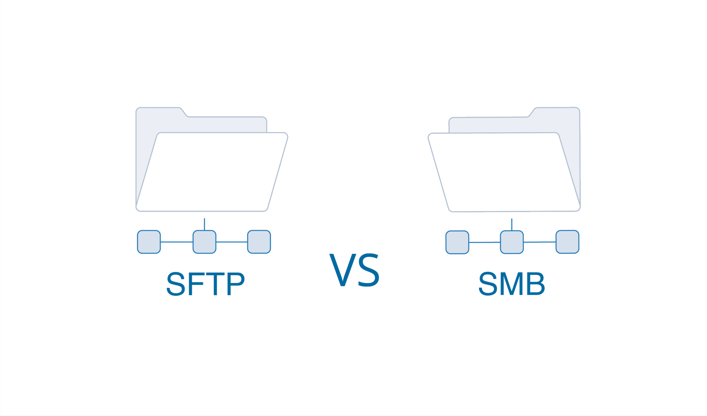
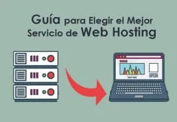

¿Que es el internet?
El término Internet se utiliza para hacer referencia a una red de computadoras interconectadas entre sí a nivel mundial con el objetivo de hacer común información de acceso público. Esta red utiliza un lenguaje en común para la comunicación entre los dispositivos.

¿Que son los proveedores de internet?

El proveedor de servicios de internet es la empresa que brinda conexión a Internet a sus clientes. Un ISP conecta a sus usuarios a Internet a través de diferentes tecnologías como ADSL, cablemódem, GSM, dial-up, fibra óptica, satélite, streaming, etc.

¿Tipos de proveedores de internet?
| isp |
tipos |
| Un proveedor de servicios de Internet (ISP) es una organización que ofrece diversos servicios para que los usuarios puedan acceder y utilizar Internet. Los ISP pueden ser organizaciones de propiedad privada, comunitaria, comercial o sin ánimo de lucro. Ofrecen servicios comunes, como acceso a internet, alojamiento web, tránsito por internet, servicios de correo electrónico, servidores proxy, colocación, registro de nombres de dominio, etc. |
ISP de acceso telefónico
Eran los mas habituales hace años y proporcionan acceso a la red mediante un la línea telefónica, así como un módem. Son las conexiones más lentas, así como baratas y este tipo de servicio está obsoletos tras la implantación de la fibra óptica y las conexiones más rápidas.
ISP de DSL
Es el servicio de conexión mediante módem de alta velocidad utilizando la instalación del cableado de cobre presente la mayor parte de los hogares. La velocidad de conexión es alta, pero depende en gran medida de la distancia física que exista entre el domicilio y la centralita del ISP.
ISP de DSL
Es el que ofrece el acceso a Internet a través de un cable coaxial (el mismo usado para la señal de TV). Del mismo modo que los anteriores, se necesita de un módem.
ISP por radiofrecuencia (banda ancha inalámbrica)
En el servicio que se ofrece en lugares remotos con acceso complejo, donde no existe infraestructura de cable. Así los ISP Internet usando antenas de radiofrecuencia pueden ofrecer su servicio (habitual en zonas rurales y con un coste elevado).
ISP por satélite
En este caso el ISP se vale de conexiones inalámbricas vía satélite, para ofrecer servicio de internet en zonas remotas (sin infraestructura de antenas ni infraestructura por cables). Estas conexiones por satélite suelen ofrecer una rápida velocidad de descarga, pero son muy lentas en la subida.
ISP por fibra óptica
En la actualidad es el tipo de conexión mas popular, tanto en empresas como por parte de particulares (en entornos urbanos). Permite establecer velocidades de conexión muy elevadas y por un mismo cable de fibra óptica, se puede dar servicios a múltiples clientes. |
Protocolos de aplicacion
La arquitectura TCP/IP está compuesta por una serie de capas o niveles en los que se encuentran los protocolos que implementan las funciones necesarias para la comunicación entre dos dispositivos en red. Esta arquitectura es independiente del modelo teórico OSI, aunque tiene muchas similitudes (ambos modelo se basan en capas o niveles). Se puede afirmar que el modelo OSI es el empleado en el estudio de las redes de datos mientras que el modelo o arquitectura TCP/IP es un modelo real empleado es las redes actuales.
En la siguiente figura se aprecian los niveles o capas de los modelos OSI y TCP/IP.

Carpeta local vs carpeta remota
La carpeta local es el directorio de trabajo. En dreamweaver se conoce como “sitio local”.En ella se almacenan los archivos los archivos con los que se están trabajando.En la carpeta remota se almacenan los archivos, según el entorno de desarrollo, para fines de prueba, producción, colaboración, etc. En dreamweaver esta carpeta se conoce como “sitio remoto” en el panel de archivos. En general la carpeta remota suele colocarse en el equipo donde se ejecuta el servidor Web.Las carpetas se datos locales y remotos permiten transferir archivos entre el disco local y servidor Web, lo cual facilita la administración de los archivos en sitios de dreamweaver.

¿Que es la experiencia de usuario?
La experiencia del usuario es el conjunto de factores y elementos relativos a la interacción del usuario con un entorno o dispositivo concretos, dando como resultado una percepción positiva o negativa de dicho servicio, producto o dispositivo.
¿Que es la interfaz de usuario?
La interfaz de usuario, IU, es el medio que permite la comunicación entre un usuario y una máquina, equipo, computadora o dispositivo, y comprende todos los puntos de contacto entre el usuario y el equipo.

Proveedores gratuitos y de pago

¿Que elementos debo tener en cuenta al contratar un proveedor para mi proyecto wed?

El hosting debe contar con: Certificado SSL, que asegura la “legitimidad” del servidor; Respaldos de información; Firewall, que evita que usuarios no autorizados tengan acceso al servidor; y escaneo de seguridad, para la detección de virus o software maligno.
- Soporte.
- Rapidez de los servidores.
- Precio.
- Opiniones de clientes.
- Panel de control.
- Escalabilidad.
- Protección ante ataques DoS y DDoS.
- CMS preinstalado y actualizado.
¿Que es y para que sirve el HTML semantico?
es el uso de las etiquetas HTML para reforzar la semántica, o el significado, de la información en las páginas web más que simplemente redefinir su forma de presentación (apariencia). El HTML semántico es procesado por los navegadores web regulares así como por muchos otros agentes de usuarios.